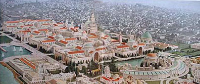
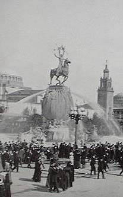

|
A Crisis of Identity: The Panama-Pacific International Exposition, 1915 by Susan Luftschein |
|  |
The Panama-Pacific International Exposition (Fig. 1) held in San Francisco in 1915 represents a crisis of identity for the United States during the first decades of the twentieth century. Politically, economically, intellectually and culturally, the country was moving from the Gilded Age into the Progressive Era. Governmental reforms, new avenues of trade, and new attitudes about science and history began to appear; yet older attitudes of isolation, conservatism and sentimentality remained in force. This set of contradictions, symptomatic of a process of national redefinition, found expression in the exposition in a number of ways.
The stated purpose of the Panama-Pacific International Exposition was to celebrate the opening of the Panama Canal and the official theme was the global peace and harmony the country hoped such a tremendous engineering feat would foster.1 After France failed in the task, the United States undertook the project in 1904;2 advances in medicine and technology enabled completion by 1914. President Theodore Roosevelt believed the canal to be a critical milestone in the nation’s continuing move toward imperialism because it would grant controlling access to both the Atlantic and Pacific Oceans.
The history of the Panama-Pacific International Exposition is intricately linked to both the Gilded Age and the Progressive Era. According to the philosopher George Santayana, the Gilded Age, the period between roughly 1876 and 1915, exhibited a number of contrasts.3 Old versus new, conservatism versus radicalism are some of the broader outlines of the conflicts that Santayana observed towards the end of the nineteenth century. Much of the conservatism of the Gilded Age was aimed at the products of the country’s increasing industrialization. As more consumer goods were mass-produced, such goods looked more like familiar hand-made objects, indicating a shift from imitation and illusion to authenticity within the arts and material culture. During the late nineteenth century there was a taste for lifelike imitations; among the best examples were the Court of Honor at the World’s Columbian Exposition with its perfect imitations of French Beaux-Arts architecture, and the Midway at Coney Island, with its reproductions of exotic, baroque and rococo architecture. The world inside these spaces offered the illusion of mastery and comprehension, allowing the older generation to deal with the rapid changes occurring within American society.
The Progressive Era is likewise noted for contrasting ideas, such as “feminine” versus “masculine”; refinement versus strength; old versus new. Progressive Era reformers recognized these contrasts and stressed “progress” in all its manifestations. They attempted to bring order to politics, industry and cities during a period of ever-increasing transformation from a rural to an urban and industrialized economy. Between 1900 and 1920 the United States was rapidly industrializing and becoming increasingly dependent on immigrant labor. Politically and economically it could no longer continue the traditional foreign policy of isolation. The government began to rely on the stability of Europe, Asia and Latin America in order to protect its own economy as U.S. companies began building factories abroad. In addition advances in communication and transportation drew the world more closely together. The balance of international power shifted due to the rise of Germany as Europe’s leading military power, and of Japan in Asia.4 A foreign policy was required that recognized the imperialist desires of new players on the world political scene, and the construction of the Panama Canal and the security it would provide to American trade routes was one of the actions taken to secure the country’s role in this world order.
Santayana’s view of the cultural situation of the United States in 1911 perfectly describes the competing visions expressed at the Panama-Pacific fair. Past expositions, beginning with the 1893 World’s Columbian Exposition, were, in effect, paradigms of the Gilded Age. They followed existing rules, were very conservative in design and execution, and reflected the correctness and “politeness” of their creators. The Panama-Pacific International Exposition mirrored the contrasts of both the waning Gilded Age and the developing Progressive Era, and attempted in theme, purpose, and design to reconcile and highlight these contrasts. The fair took place in San Francisco in the “masculine” West; artists associated with the eastern “feminine” establishment conceived the decorations. The fair expressed illusion through its outward appearance, yet authenticity in the exhibits showcased in the buildings. Much of the architecture and iconography displayed nostalgia, yet the official theme looked to the future. Previous U.S. expositions had been commemorative events celebrating the country’s history;5 the Panama-Pacific fair celebrated the Panama Canal, a symbol of contemporary aggressive enterprise.
More specifically the contrasts evident in the fair are as follows. The palaces were designed in a Beaux Arts-like arrangement with a distinctly anti-Beaux-Arts use of color and a popular perception of the fairgrounds as an “Oriental City”; the size of the fairgrounds stood in direct contrast to that of previous expositions and can therefore also be read as anti-Beaux-Arts. The lofty ideals espoused by the fair officials stood in direct contrast to the obvious fake quality of the fair buildings. The decoration reflected sentimentality and nostalgia, although the official theme looked to the future. The official touting of world peace was undermined by the overwhelming use of U.S. themes in the iconography of the decorations. As a paradigm of conflicts the fair was both a relic of the past and a harbinger of the future, a dichotomy of old and new, and a reflection of national identity during the first decades of the twentieth century.
The contrasts exhibited by the plan of the fairgrounds are based on the unusual nature of the design. Unlike earlier American expositions, which featured neoclassically-inspired exhibition palaces arranged ceremoniously over large areas, the plan was centered around a much more compact series of courts or plazas that were arranged in a distinctly Beaux-Arts fashion (see Figure 1). The arrangement of courts was intended as a direct contrast to the formal and severe nature of its immediate predecessors. It was intended to be comfortable, easy on both the eyes (unlike the overwhelming whiteness of the World’s Columbian Exposition) and feet (the most recent fair, the Louisiana Purchase Exposition, was the largest ever held in the United States). A large tower (the Tower of Jewels) was placed above the main avenue of entrance to the courts or plazas that were situated in two ranks on an east-west axis. On this axis were the central and two subsidiary courts (the Court of the Universe and the Courts of Abundance and Four Seasons). Two additional courts were placed to the south of the subsidiary courts (the Courts of Flowers and Palms). The result was a pleasing, harmonious, symmetrical, and ceremonial arrangement. However, the Beaux-Arts similarities end there. The styles chosen by the architects varied, and the decision to avoid a neoclassically inspired central mandate for design was a clear departure from previous American expositions. The designs of the palaces, courts, and walls ran the gamut from Spanish-Moorish to old Italian.
Once the courts were designed, Jules Guerin, the New York-based painter hired as the fair’s Chief of Color, was called in to design a color scheme for the grounds. The idea behind coloring the site was a reflection of the fair’s unique place within the history of expositions. By 1915 archaeology had revealed that the ancients had colored their buildings and sculpture. This scientific, archaeological, and Progressive aspect appealed to the fair’s planners, who determined that the Panama Pacific International Exposition would make a conscious departure from the White City tradition inaugurated by the World’s Columbian Exposition.6 Despite this “Progressive” element, the use of color in the buildings expressed a definite sense of nostalgia. Every element of the fair was assigned a specific color in order to hark back to the classical past as it was now understood and to harmonize the potentially disparate architectural and design elements. Guerin chose nine colors from the surrounding countryside; the most notable element of the scheme, in light of the history of U.S. expositions, was that white was not to be used at all.
Because each court was essentially designed in a different style, and these styles varied widely, and each architectural and decorative element within the courts was colored, the resulting composition seemed distinctly not Beaux-Arts. Indeed the fair was called the “Oriental City” or the “Walled City” because of the many visual similarities to Mediterranean and Eastern architecture. All the courts and free-standing buildings (with the exception of the Court of the Universe) were described as Mediterranean, which, according to one chronicler, meant not just Byzantine, or Roman, or Italian, or Spanish, or Moorish, but a little of each.7 In addition the inclusion of an enclosing wall around the fairgrounds was taken from the defense wall so common to Latin American, Spanish and Southern Mediterranean architecture. The site, the southern end of the Golden Gate at the entry to the Bay, originally a sloping beach, reminded the architects of a Mediterranean setting, and this suggested the idea of a far eastern city with large walled-in buildings sheltering courts.
While the architecture did not resemble any previous exposition, it calls to mind contemporary movie palaces and the illusory quality of movie sets. By 1915 movie palaces were springing up all over the country, replacing nickelodeon houses, and their architectural styles borrowed heavily from exotic and romantic architecture, as did the fair. Dramatic costume epics were also becoming immensely popular by the middle of the second decade, especially epics dealing with classical subjects. The Court of the Universe, the fair’s central and most iconographically important location, designed in an ornate Italian Renaissance style, immediately evokes films like the 1913 Italian epic Quo Vadis, or D.W. Griffith’s 1916 Intolerance for which the Tower of Jewels served as the inspiration for the Babylon set.8 By 1915 California was recognized as the major center of the country’s film production with studios located as far north as San Francisco.9
|  |
Alexander Stirling Calder's "Fountain of Energy" in the South Gardens was the first piece of monumental sculpture to greet visitors as they entered the main gates of the "Walled City" (Figure 2). It symbolized the "creation of the Isthmian waterway between the oceans"10 with special emphasis on the role played by the U.S. Allegorical figures representing the four oceans of the world—the North Sea, South Arctic, Atlantic and Pacific Oceans—were placed around a sphere symbolizing the world. Upon this sphere were reclining figures of the two hemispheres, and topping the entire composition was an equestrian figure representing the Victor, described by one critic as a typically “American” male.11 The theme of this work was the idea of Energy: as the Conqueror; mental and physical energy; Energy the will that achieved the Canal.12 It was also often declared the Power of America Rising from the Sea.13 The work was a declaration of the engineering and technological skill of the United States, and was designed to propagandize the country’s part in the completion of the Canal.
Nearby the ideologies of Social Darwinism, westward expansion, and the superiority of the white/American race found expression in locations where the official theme, global peace and harmony, was supposed to dominate, such as the Tower of Jewels (Thomas Hastings, architect) (Figure 3) and the Court of the Universe (McKim, Mead and White, architects) (Figure 4). Rising to four hundred and thirty five feet, with great Roman arches rising to one hundred sixty feet, the Tower of Jewels was covered with thousands of pieces of Austrian crystal, which, when illuminated at night, sparkled like jewels. The tower was the fair's real entrance, leading directly into the Court of the Universe. It played three roles: it was the central form upon which all the buildings were balanced; it was the triumphal gateway to this commemorative celebration of an event which it itself summarized in sculpture, painting and inscriptions; and it was considered the epitome of the exposition’s art.14 Through inscriptions on the south face, the Tower told the story of Panama and the Pacific shore northward from the Canal Zone. The north face related the history of California, emphasizing for the visitor the U.S.’s role in both the exposition and the Canal.
 |
Atop the Tower a series of figures by the sculptor John Flanagan represented Euro-American civilization, consisting of the “Philosopher,” “Priest,” “Soldier,” and “Adventurer”. These figures symbolized men who “conquered” the western United States. At the base of the Tower were Charles Niehaus's “Cortez” and Charles Carey Rumsey's “Pizarro,” two Spanish explorers. Two works within the Tower, Gertrude Vanderbilt Whitney’s “Fountain of El Dorado” and Edith Woodman Burroughs’s “Fountain of Youth” furthered the Spanish element. The overriding emphasis here is the perceived mythology surrounding South America and Spanish civilization with the goal of stressing the joining of continents and cultures by the Canal.
However, the inclusion of two mural triptychs by William DeLeftwich Dodge forces us to read the entire tower as a celebration of western civilization in the New World. Dodge placed his triptychs, “The Atlantic and the Pacific”, flanked by “Discovery” and “The Purchase”, and “The Gateway of All Nations,” flanked by “Achievement” and “Labor Crowned,” below the Roman arches. Their official role was to celebrate the completion of the Canal through its history, spirit and achievement, and its future services. At the same time the imagery distinctly concerns the United States. “The Gateway of All Nations”, for example, includes modern machinery, a nod to U.S. technological triumph.
Through the Tower of Jewels the visitor next encountered McKim, Mead and White's Court of the Universe. The primary – that is – most visible works are clear representations of the theme of global peace and harmony. On the eastern and western ends were two large triumphal arches, the Arches of the Rising Sun and the Setting Sun, topped, respectively, with sculptural groups representing the Nations of the East and West (collaborative efforts by Calder, Leo Lentelli and Frederick G.R. Roth). Both of these groups represented the types of men and women who molded their respective civilizations. In front of the arches were two groups by Paul Manship, “Order and Chaos” and “Eternity and Change”. Situated on either side of the court's center were two fountains by Adolph Weinman, the Fountains of the Rising and Setting Suns, symbolizing the scope of the Canal. The Nations of the East and West groups combined with Weinman's works express the court's function as the meeting place of all nations.
Yet in the context of the court’s murals, conflicting messages appear. The triumphal arches reveal two sets of murals. In the Nations of the East arch panels by Edward Simmons depicted “The Lure of the Atlantic” and “The Visions of Exploration”. The former portrayed the westward trend of War, Commerce, Conquest, Imagination and Religion from Europe toward the Atlantic, while the latter dealt with the dreams that led to the exploration and exploitation of the western United States. Opposite, in the Nations of the West arch, panels by Frank Vincent DuMond illustrated the westward march of civilization. Through the image of a young man, “Leaving the East” and “Arrival in the West” commemorated the pioneer spirit on the American continent in the march from the Atlantic to the Pacific. In iconography these murals stand in opposition to the general iconography of most of the court's decoration. Rather than affirming universal brotherhood, they celebrate westward expansion and imperialism by the U.S.
At the northern end of the court, approached via a long colonnaded esplanade “borrowed” from Bernini's colonnade at St. Peter's, stood the Column of Progress designed by Symmes Richardson. Atop the Column was Hermon A. MacNeil's “Adventurous Bowman”; below, friezes representing the survival of the fittest by Isidor Konti. Although intended as a universal symbol of achievement, the Bowman was a distinctly western type. In conjunction with the Darwinian friezes showing men in their onward march through life, this depiction expresses the ascendancy of western civilization, therefore complementing the murals by DuMond and Simmons.
Arguably the most interesting and disturbing of the fair's courts was Louis Mullgardt’s Court of Abundance (Figure 5), epitomizing the fair’s contrasts. Placed directly to the east of the Court of the Universe, it was originally called by Mullgardt the Court of Ages. We find both nostalgia and a glance toward the future; a nod to the Beaux-Arts within an anti-Beaux-Arts setting; and a direct contradiction of the fair’s global theme. Mullgardt’s court was more emphatically “Oriental” than any other. Unlike the other courts the theme was difficult to pin down. Officially it dealt with the magical power of fire and water, hence “Abundance”. However, major aspects of the decoration clearly refer to Social Darwinism. Sculpture on the court’s north tower by Chester Beach depicted primitive man, the middle ages and modern times. Atop the arcade, Albert Weinert portrayed primitive men alternating with a mother and child group. Robert Aitken’s “Fountain of the Earth” stood in the court’s center. Shaped vaguely like a ship, it told the story of human life in its many phases. A large orb representing earth formed the center of the composition, while around the base panels entitled “Natural Selection and the Survival of the Fittest” treated human evolution.
Unlike the Court of the Universe, which incorporated works that both supported and undermined the fair’s agenda regarding the canal and world peace, the Court of Abundance dealt entirely with subversive subject matter. Mullgardt's court had no connection to the official ideology. The architecture and decoration dealt with Darwinian themes in direct opposition to either concern. Together they expressed nostalgia for the past, whereas the fair aimed at a celebration of the future. All of these “unofficial” elements were situated within a courtyard that was placed on a main axis directly adjacent to the most Beaux-Arts section of the fair, the Court of the Universe.
World War I began shortly before the fair opened and assured that it would never again be possible to celebrate an event such as the opening of the Canal that was intended to represent the steady ascent of progress, technology and civilization. Illusions of world peace, which, on the surface, the fair so strongly tried to convey, were shattered and could never again be attempted. The Panama-Pacific International Exposition was the last of the great Beaux-Arts fairs, but it opened after its period had ended. The attempt to reconcile the Genteel Tradition and the ideals of the Progressive Era would be overshadowed by all too obvious similarities to movie sets and palaces, sadly the only element of the fair that would persist in the popular imagination.